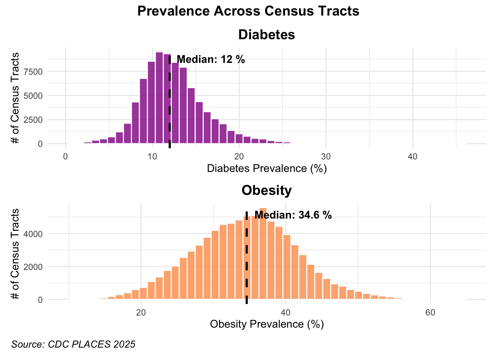
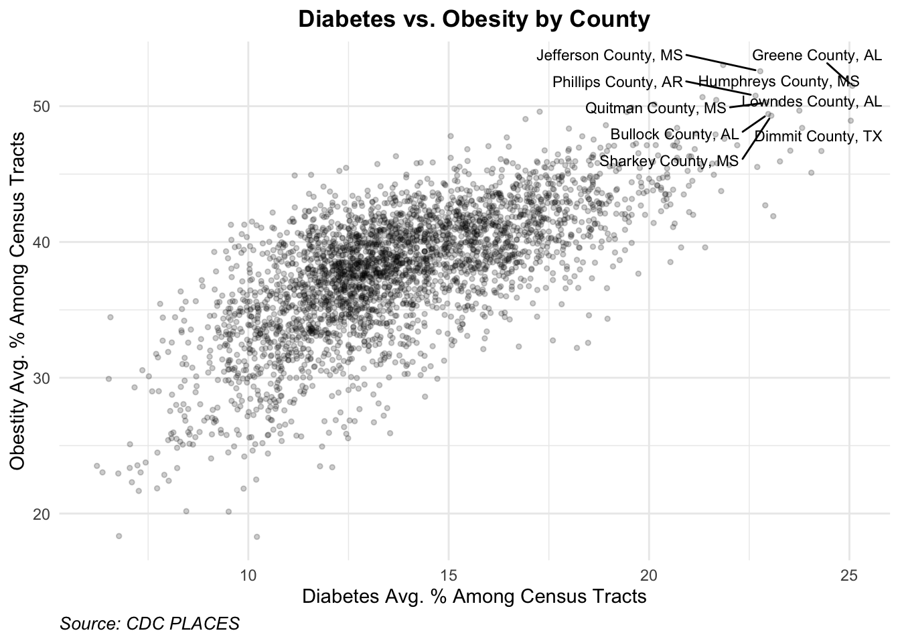
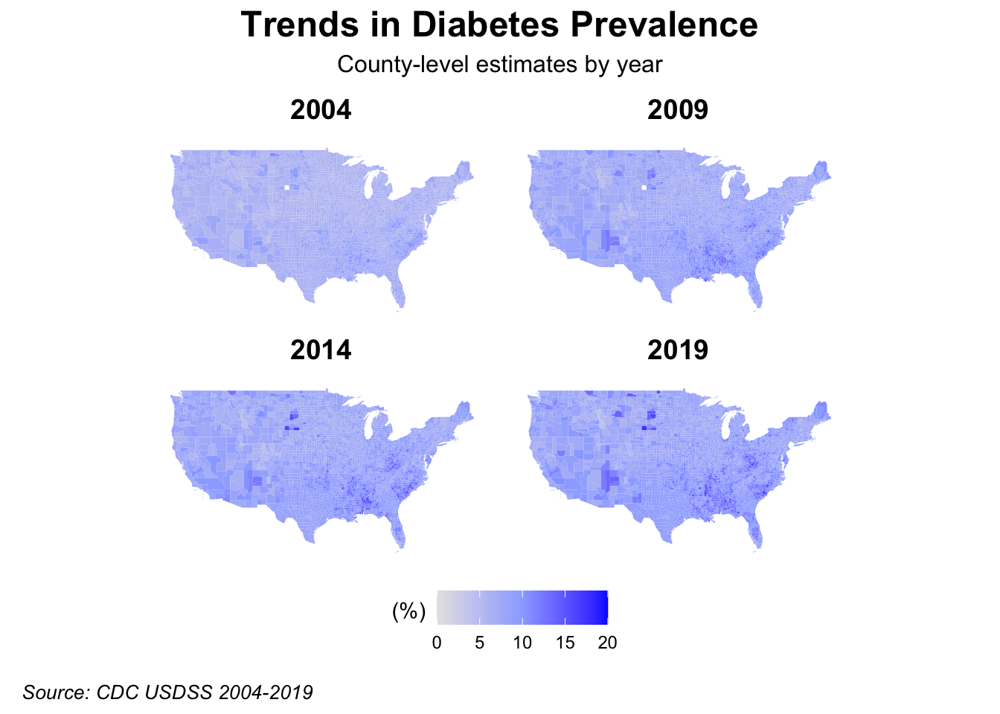
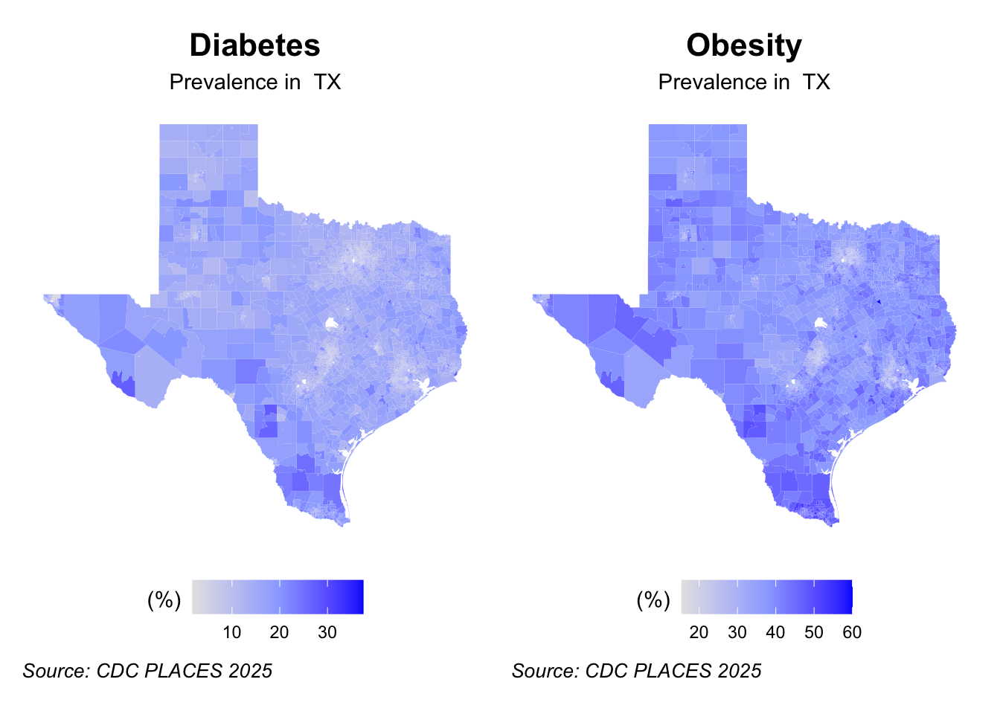
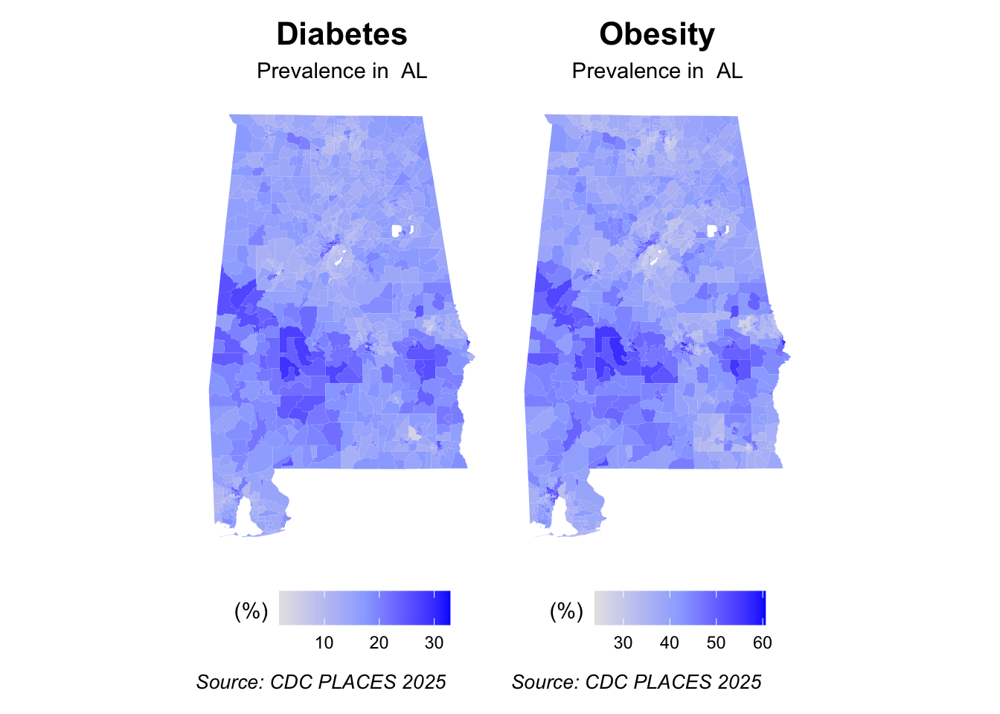
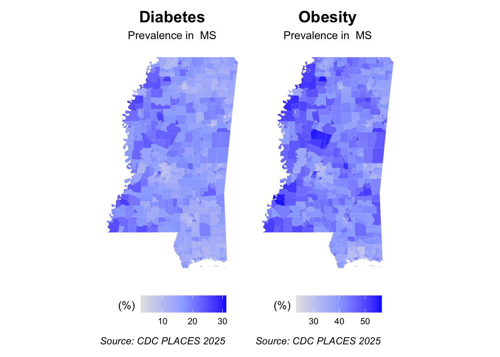
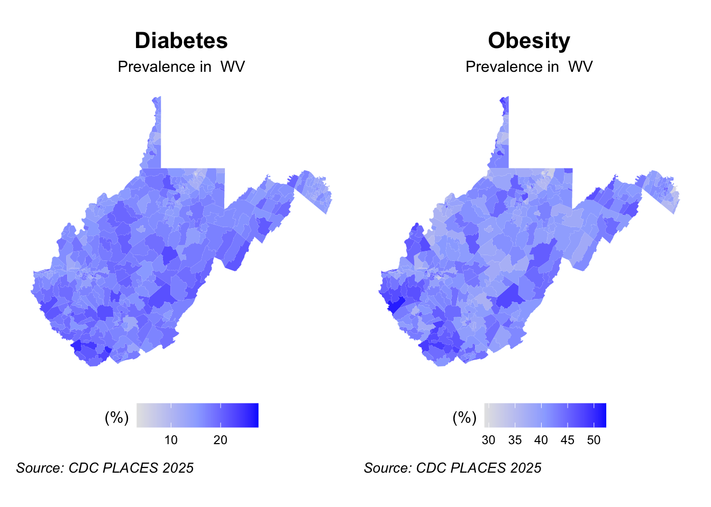

This project looks at diabetes and obesity patterns in the United States. It is part of a larger investigation into the idea of food deserts, or communities with limited access to nutritious and affordable food. While the exact definition of a food desert is subject to some ongoing debate, this explanation from the USDA is helpful:
Census tracts qualify as food deserts if they meet low-income and low-access thresholds:
Low-income: a poverty rate of 20 percent or greater, or a median family income at or below 80 percent of the statewide or metropolitan area median family income;
Low-access: at least 500 persons and/or at least 33 percent of the population lives more than 1 mile from a supermarket or large grocery store (10 miles, in the case of rural census tracts).
The motivation for this work is to answer the question: Are food deserts in the US linked to health problems like diabetes?
Data Acquisition
This project will use CDC Places data. According to the CDC site:
PLACES provides health and health-related data using small-area estimation for counties, incorporated and census designated places, census tracts, and ZIP Code Tabulation Areas (ZCTAs) across the United States. This project, which started in 2015, is a partnership between CDC, the Robert Wood Johnson Foundation (RWJF), and CDC Foundation.
CODE: Download and setup data files
# Download diabetes and obesity prevalence from CDC PLACES Census Tract Health Data# Load required librarieslibrary(tidyverse)library(sf)library(httr)library(jsonlite)library(tigris)library(viridis)library(patchwork)library(dplyr)library(ggplot2)library(scales)library(lubridate)if(!require("DT")) install.packages("DT")library(DT)library(stringr)# Set optionsoptions(tigris_use_cache =TRUE)# Define cache file namesplaces_cache_file <-file.path("data", "final", "places_data_cache.rds")tracts_cache_file <-file.path("data", "final", "census_tracts_cache.rds")# Create directory if it doesn't existdir.create(file.path("data", "final"), recursive =TRUE, showWarnings =FALSE)# 1. Download PLACES data from CDC (with caching)if (file.exists(places_cache_file)) { places_data <-readRDS(places_cache_file)} else {cat("No cache found. Downloading PLACES data from CDC...\n")# Function to download data in chunks (Socrata has a limit) download_places_data <-function(measure, limit =50000, offset =0) { url <-"https://data.cdc.gov/resource/cwsq-ngmh.json"# Build query URL manually query_url <-paste0( url,"?$limit=", limit,"&$offset=", offset,"&measureid=", measure ) response <-GET(query_url)if (status_code(response) ==200) { data <-fromJSON(content(response, "text", encoding ="UTF-8"))return(data) } else {warning(paste("Error downloading data for", measure, ":", status_code(response)))return(NULL) } }# Download data for each measure separatelycat("Downloading diabetes data...\n") diabetes_data <-list() offset <-0 chunk_size <-50000repeat {cat(paste(" Downloading records starting at", offset, "...\n")) chunk <-download_places_data("DIABETES", limit = chunk_size, offset = offset)if (is.null(chunk)) {cat(" No more data or error occurred\n")break }if (nrow(chunk) ==0) break diabetes_data[[length(diabetes_data) +1]] <- chunkif (nrow(chunk) < chunk_size) break offset <- offset + chunk_size }cat("Downloading obesity data...\n") obesity_data <-list() offset <-0repeat {cat(paste(" Downloading records starting at", offset, "...\n")) chunk <-download_places_data("OBESITY", limit = chunk_size, offset = offset)if (is.null(chunk)) {cat(" No more data or error occurred\n")break }if (nrow(chunk) ==0) break obesity_data[[length(obesity_data) +1]] <- chunkif (nrow(chunk) < chunk_size) break offset <- offset + chunk_size }# Download food-related measurescat("Downloading food insecurity data...\n") food_insecurity_data <-list() offset <-0repeat {cat(paste(" Downloading records starting at", offset, "...\n")) chunk <-download_places_data("FOODINSECURITY", limit = chunk_size, offset = offset)if (is.null(chunk) ||length(chunk) ==0) {cat(" Food insecurity data not available or no more data\n")break }if (!is.data.frame(chunk) ||nrow(chunk) ==0) break food_insecurity_data[[length(food_insecurity_data) +1]] <- chunkif (nrow(chunk) < chunk_size) break offset <- offset + chunk_size }cat("Downloading SNAP/food stamps data...\n") snap_data <-list() offset <-0repeat {cat(paste(" Downloading records starting at", offset, "...\n")) chunk <-download_places_data("FOODSTAMPS", limit = chunk_size, offset = offset)if (is.null(chunk) ||length(chunk) ==0) {cat(" SNAP data not available or no more data\n")break }if (!is.data.frame(chunk) ||nrow(chunk) ==0) break snap_data[[length(snap_data) +1]] <- chunkif (nrow(chunk) < chunk_size) break offset <- offset + chunk_size }# Download related cardiovascular measurescat("Downloading high blood pressure data...\n") bphigh_data <-list() offset <-0repeat {cat(paste(" Downloading records starting at", offset, "...\n")) chunk <-download_places_data("BPHIGH", limit = chunk_size, offset = offset)if (is.null(chunk) ||length(chunk) ==0) {cat(" High blood pressure data not available or no more data\n")break }if (!is.data.frame(chunk) ||nrow(chunk) ==0) break bphigh_data[[length(bphigh_data) +1]] <- chunkif (nrow(chunk) < chunk_size) break offset <- offset + chunk_size }cat("Downloading high cholesterol data...\n") cholesterol_data <-list() offset <-0repeat {cat(paste(" Downloading records starting at", offset, "...\n")) chunk <-download_places_data("HIGHCHOL", limit = chunk_size, offset = offset)if (is.null(chunk) ||length(chunk) ==0) {cat(" High cholesterol data not available or no more data\n")break }if (!is.data.frame(chunk) ||nrow(chunk) ==0) break cholesterol_data[[length(cholesterol_data) +1]] <- chunkif (nrow(chunk) < chunk_size) break offset <- offset + chunk_size }# Combine all chunks places_data <-bind_rows(c(diabetes_data, obesity_data, food_insecurity_data, snap_data, bphigh_data, cholesterol_data))cat(paste("Downloaded", nrow(places_data), "records\n"))# Save to cachecat("Saving PLACES data to cache...\n")saveRDS(places_data, places_cache_file)cat("Cache saved!\n")}# Check column names# cat("\nColumn names in downloaded data:\n")# print(names(places_data))# Process health data# Handle different possible column name variationsif ("tractfips"%in%names(places_data)) { tract_col <-"tractfips"} elseif ("locationid"%in%names(places_data)) { tract_col <-"locationid"} elseif ("tract_fips"%in%names(places_data)) { tract_col <-"tract_fips"} else {stop("Cannot find tract identifier column. Available columns: ", paste(names(places_data), collapse=", "))}health_data <- places_data %>%filter(measureid %in%c("DIABETES", "OBESITY", "FOODINSECURITY", "FOODSTAMPS", "BPHIGH", "HIGHCHOL")) %>%select(any_of(c("locationname", "stateabbr", "statedesc", tract_col, "measureid", "data_value", "totalpopulation", "total_population"))) %>%rename(tractfips =all_of(tract_col))# Handle population columnif ("totalpopulation"%in%names(health_data)) { health_data <- health_data %>%mutate(data_value =as.numeric(data_value),totalpopulation =as.numeric(totalpopulation) )} elseif ("total_population"%in%names(health_data)) { health_data <- health_data %>%mutate(data_value =as.numeric(data_value),totalpopulation =as.numeric(total_population) )} else { health_data <- health_data %>%mutate(data_value =as.numeric(data_value),totalpopulation =NA_real_ )}# Pivot to wide format for easier analysishealth_wide <- health_data %>%select(tractfips, stateabbr, measureid, data_value, totalpopulation, any_of("locationname")) %>%distinct() %>%pivot_wider(names_from = measureid,values_from = data_value,id_cols =c(tractfips, stateabbr, totalpopulation, any_of("locationname")) ) %>%rename_with(tolower)# Extract location name if available (this is usually city/county)if ("locationname"%in%names(health_wide)) { health_wide <- health_wide %>%mutate(location = locationname)} else { health_wide <- health_wide %>%mutate(location =NA_character_)}
While the CDC PLACES data is released for multiple years, it is not recommended to be used for evaluating trends (such as diabetes prevalence) over time. Instead, the CDC US Diabetes Surveillance System (USDSS) data can be used.
CODE: Load temporal data
# Download county-level diabetes temporal trends# Note: CDC USDSS requires manual download from: https://gis.cdc.gov/grasp/diabetes/DiabetesAtlas.html# Instructions: # 1. Go to the Atlas, click "Surveillance" -> "County" tab# 2. Select years of interest (2004, 2009, 2014, 2019)# 3. Download CSV using the download icon# 4. Save as "diabetes_trends_YEAR.csv" in your data folder# Function to load and process temporal data if availableload_temporal_diabetes <-function(years =c(2004, 2009, 2014, 2019)) { temporal_data <-list()for (year in years) { file_path <-file.path("data", "final", paste0("diabetes_trends_", year, ".csv"))if (file.exists(file_path)) {# cat(paste("Loading data for", year, "...\n"))# Read the file, skipping the first metadata row# The actual data structure is CSV-within-CSV df <-read_csv(file_path, skip =1, # Skip "Data downloaded on..." rowshow_col_types =FALSE,col_names =c("data_string", "extra1", "extra2", "extra3", "extra4"),col_types =cols(.default ="c"))# The first row should contain the headers: County,State,CountyFIPS,Percentage,Lower CI,Upper CI header_row <- df$data_string[1]# Parse the actual data rows (skip the header row) data_rows <- df$data_string[-1]# Split each row by comma parsed_data <-map_dfr(data_rows, function(row) { parts <-str_split(row, ",", simplify =TRUE)if (length(parts) >=4) {tibble(County = parts[1],State = parts[2],CountyFIPS = parts[3],Percentage =as.numeric(parts[4]),LowerCI =if(length(parts) >=5) as.numeric(parts[5]) elseNA,UpperCI =if(length(parts) >=6) as.numeric(parts[6]) elseNA ) } else {NULL } }) parsed_data <- parsed_data %>%mutate(year = year) %>%filter(!is.na(Percentage), !is.na(CountyFIPS)) temporal_data[[as.character(year)]] <- parsed_data# cat(paste(" Successfully loaded", nrow(parsed_data), "counties\n")) } else {cat(paste("File not found:", file_path, "\n"))cat("Download from: https://gis.cdc.gov/grasp/diabetes/DiabetesAtlas.html\n") } }if (length(temporal_data) >0) { all_years <-bind_rows(temporal_data)# cat(paste("\nTotal records loaded:", nrow(all_years), "\n"))# cat(paste("Years:", paste(unique(all_years$year), collapse=", "), "\n"))# cat(paste("Counties per year:", nrow(all_years) / length(unique(all_years$year)), "\n"))return(all_years) } else {cat("\nNo temporal data files found. To download:\n")cat("1. Visit https://gis.cdc.gov/grasp/diabetes/DiabetesAtlas.html\n")cat("2. Click 'Surveillance' -> 'County' tab\n")cat("3. Select indicator and year, then download CSV\n")cat("4. Save as diabetes_trends_YEAR.csv in data/final/\n")return(NULL) }}# Load temporal datatemporal_diabetes <-load_temporal_diabetes(years =c(2004, 2009, 2014, 2019))
Finally, census tract shape files will be downloaded to enable the creation of maps at the national and state level.
CODE: Download shape files for mapping
# 5. Download census tract shapefiles for mapping (with caching)if (file.exists(tracts_cache_file)) { us_tracts <-readRDS(tracts_cache_file)} else {cat("No cache found. Downloading census tract boundaries...\n")cat("This may take several minutes...\n")# Get unique states from the data states_in_data <-unique(health_wide$stateabbr) states_in_data <- states_in_data[!is.na(states_in_data)]# Download tracts for all states# Use year = 2022 to get Connecticut's new planning region codes us_tracts <-map_dfr(states_in_data, function(state) {tracts(state = state, year =2022, cb =TRUE) %>%mutate(state = state) })# Save to cache# cat("Saving census tracts to cache...\n")saveRDS(us_tracts, tracts_cache_file)}# 6. Join health data to spatial data# first few rows are some leftover debugging codesample_geoids <-head(us_tracts$GEOID, 3)# print(sample_geoids)# cat(sprintf("GEOID length: %d\n", nchar(sample_geoids[1])))# cat("\nSample tractfips from health data:\n")sample_tractfips <-head(health_wide$tractfips, 3)# print(sample_tractfips)# cat(sprintf("tractfips length: %d\n", nchar(sample_tractfips[1])))# Check CT specificallyct_geoids <- us_tracts %>%filter(STATEFP =="09") %>%head(3) %>%pull(GEOID)ct_tractfips <- health_wide %>%filter(stateabbr =="CT") %>%head(3) %>%pull(tractfips)# cat("\nConnecticut GEOID samples:\n")# print(ct_geoids)# cat("\nConnecticut tractfips samples:\n")# print(ct_tractfips)# Perform join and add county namestracts_health <- us_tracts %>%left_join(health_wide, by =c("GEOID"="tractfips")) %>%mutate(# Create a readable location name from county name and statelocation =if_else(!is.na(NAMELSAD),paste0(NAMELSAD, ", ", state),NA_character_ ),# Calculate population density (people per square mile)area_sqmi =as.numeric(st_area(geometry)) /2589988.11, # Convert to square milespop_density = totalpopulation / area_sqmi )
Exploratory Data Analysis
Let’s take a look at the data. The most granular information in the data set is at the census tract level. Census tracts are identified by a numeric code known as a FIPS code (FIPS stands for Federal Information Processing Standards), specifically a 6-digit code that combines with state and county FIPS codes to form a unique, 11-digit national identifier (GEOID) for each tract. The codes themselves may not be meaningful to most readers, but we can use them to identify which county and state the tract is located in. They can also be rendered on a map and so become visually understandable.
Let’s look at the summary statistics for health issues by census tract (in %):
CODE: Diabetes rates summary
summary(health_wide$diabetes)
Min. 1st Qu. Median Mean 3rd Qu. Max.
0.70 9.90 12.00 12.43 14.40 45.70
CODE: Obesity rates summary
summary(health_wide$obesity)
Min. 1st Qu. Median Mean 3rd Qu. Max.
10.40 29.60 34.60 34.43 39.20 64.40
CODE: High blood pressure rates summary
summary(health_wide$bphigh)
Min. 1st Qu. Median Mean 3rd Qu. Max. NA's
4.10 28.90 33.40 33.79 38.30 80.20 5077
Plotting the distribution of values gives a sense for what is typical.
CODE: Histograms
# Histogram 1: Diabetes Prevalence Distributionh1 <-ggplot(tracts_health %>%filter(!is.na(diabetes)), aes(x = diabetes)) +geom_histogram(bins =50, fill ="#932092", color ="white", alpha =0.8) +geom_vline(aes(xintercept =median(diabetes, na.rm =TRUE)), color ="black", linetype ="dashed", linewidth =1) +annotate("text", x =median(tracts_health$diabetes, na.rm =TRUE), y =Inf, label =paste("Median:", round(median(tracts_health$diabetes, na.rm =TRUE), 1), "%"),vjust =2, hjust =-0.1, color ="black", fontface ="bold") +theme_minimal() +labs(title ="Diabetes",x ="Diabetes Prevalence (%)",y ="# of Census Tracts" ) +theme(plot.title =element_text(hjust =0.5, face ="bold", size =14) )# Histogram 2: Obesity Prevalence Distributionh2 <-ggplot(tracts_health %>%filter(!is.na(obesity)), aes(x = obesity)) +geom_histogram(bins =50, fill ="#fd9c58", color ="white", alpha =0.8) +geom_vline(aes(xintercept =median(obesity, na.rm =TRUE)), color ="black", linetype ="dashed", size =1) +annotate("text", x =median(tracts_health$obesity, na.rm =TRUE), y =Inf, label =paste("Median:", round(median(tracts_health$obesity, na.rm =TRUE), 1), "%"),vjust =2, hjust =-0.1, color ="black", fontface ="bold") +theme_minimal() +labs(title ="Obesity",x ="Obesity Prevalence (%)",y ="# of Census Tracts" ) +theme(plot.title =element_text(hjust =0.5, face ="bold", size =14) )# Combined histogram viewhist_combined <- h1 / h2 +plot_layout(guides ="collect") +# Collect all legends into oneplot_annotation(title ="Prevalence Across Census Tracts",caption ="Source: CDC PLACES 2025",theme =theme(plot.caption =element_text(size =10, face ="italic", hjust =0),plot.title =element_text(hjust =0.5, face ="bold", size =14), ) )hist_combined

The obesity data appears to be normally distributed. The diabetes data shows some right skew with some elevated outliers.
Since obesity is recognized as a risk factor for type 2 diabetes, we would expect a relationship between the values, and the shapes of the distributions appear to be related.
Let’s examine some of the census tracts that stand out.
CODE: Top 5 Census Tracts with Highest Diabetes Prevalence
Census tracts can vary greatly in terms of population and incidence. In some cases, a census tract may distort the view of incidence. For example, the CA tract topping this list is entirely populated by residents in an assisted living facility in San Francisco, and the NY tract near the top is only home to residents of a VA assisted living facility in Queens. These tracts are clearly outliers and not representative of the larger population trends.
CODE: Top 5 Census Tracts with Highest Obesity Prevalence:
Similarly, the NY census tracts appearing on this list for obesity are either entirely or partially populated by inmates in a correctional facility, which also likely does not represent the overall trend well.
To zoom out just a bit, it may be more helpful to look at things at the county level.
CODE: Top 10 Counties by Average Diabetes Prevalence
# Create a summary table with county-level aggregations for better readability# (County looked more useful than tract because a tract with a hospital or assisted living facility skews the results)county_summary <- tracts_health %>%st_drop_geometry() %>%filter(!is.na(diabetes) |!is.na(obesity)) %>%group_by(NAMELSADCO, state, stateabbr) %>%summarise(n_tracts =n(),avg_diabetes =mean(diabetes, na.rm =TRUE),avg_obesity =mean(obesity, na.rm =TRUE),max_diabetes =max(diabetes, na.rm =TRUE),max_obesity =max(obesity, na.rm =TRUE),.groups ="drop" ) %>%arrange(desc(avg_diabetes))# Create a more specific summary table with county-level aggregations for better readabilitycounty_summary_diabetes <- tracts_health %>%st_drop_geometry() %>%filter(!is.na(diabetes) |!is.na(obesity)) %>%group_by(NAMELSADCO, state) %>%summarise(n_tracts =n(),population =sum(totalpopulation, na.rm=TRUE),avg_diabetes =mean(diabetes, na.rm =TRUE),.groups ="drop" ) %>%arrange(desc(avg_diabetes))county_summary_diabetes |>head(10) |>format_titles() |>datatable(options =list(searching =FALSE,paging =FALSE,info =FALSE,ordering =FALSE),caption ="Source: CDC PLACES" ) |>formatRound(c('Avg Diabetes'), digits =1)
Here we see that the counties with the highest diabetes prevalence are in Alabama and Texas.
CODE: Top 10 Counties by Average Obesity Prevalence
There are a lot of counties in Mississippi and Alabama topping the list for obesity.
How similar are the patterns of obesity and diabetes? Several counties appear on both lists and there is a fair amount of overlap in terms of state representation.
CODE: Plot incidence
# plot obesity and diabeteslibrary(ggrepel)library(scales)ggplot(county_summary, aes(x = avg_diabetes, y = avg_obesity)) +geom_point(size =1, alpha =0.2) +geom_text_repel(data = county_summary |>filter(!is.na(avg_diabetes), !is.na(avg_obesity)) |>filter(avg_diabetes >quantile(avg_diabetes, 0.994) & avg_obesity >quantile(avg_obesity, 0.994)),aes(label =paste0(NAMELSADCO, ", ", state)),size =3,show.legend =FALSE,box.padding =0.3,point.padding =0.2,max.overlaps =30 ) +# scale_x_continuous(labels = percent_format()) +# scale_y_continuous(labels = percent_format()) +labs(title ="Diabetes vs. Obesity by County",caption ="Source: CDC PLACES",x ="Diabetes Avg. % Among Census Tracts",y ="Obestity Avg. % Among Census Tracts", ) +theme_minimal() +theme(plot.title =element_text(hjust =0.5, face ="bold"),plot.caption =element_text(size =10, face ="italic", hjust =0) )

The counties with the highest levels of both obesity and diabetes can be found in the upper right. It does appear that there is a rough correlation between the values. To make this data more digestible, let’s look at a state summary plot.
The color coding helps to visualize differences among the states. Some states are high in both diabetes and obesity measures, some are low in both, and a few are high in one measure but not the other. The bubble size helps to give a sense for the scale of the impact based on state population. States like West Virginia, Mississippi, Louisiana, and Alabama appear in the upper right, indicating that they have the highest levels of diabetes and obesity. States like Vermont and Colorado have the lowest levels. Hawaii is a bit of an anomaly because it is high in diabetes but the lowest state in obesity.
National Maps
Let’s map the incidence levels across the country.
As the map makes clear, there are high levels of diabetes through parts of the deep south, Texas, pockets of the southwest and Appalachia. Lower levels are visible in the northeast, the west coast, and much of the midwest and west.
When viewing this map with the previous two, it becomes apparent that the more densely populated areas are generally showing lower rates of obesity and density. It suggests that there may be a “rural effect” on health trends.
How have diabetes rates changed over time? Let’s look at the trend.
CODE: Diabetes map over time
# Function to create temporal trend mapscreate_temporal_maps <-function(temporal_data, years =c(2004, 2009, 2014, 2019)) {if (is.null(temporal_data)) {cat("No temporal data available for mapping\n")return(NULL) }# Get county boundaries# cat("Downloading county boundaries for mapping...\n") counties_sf <-counties(cb =TRUE, year =2021) %>%mutate(county_fips =paste0(STATEFP, COUNTYFP))# Join temporal data temporal_sf <- counties_sf %>%left_join(temporal_data, by =c("county_fips"="CountyFIPS"))# Create maps for selected years maps <-list()for (yr in years) { year_data <- temporal_sf %>%filter(year == yr) p <-ggplot(year_data) +geom_sf(aes(fill = Percentage), color =NA) +scale_fill_gradientn(colors =c("grey90","#9badff", "#0432ff" ),#colors = c("deepskyblue4", "aliceblue", "darkred"),name ="(%)\n",na.value ="grey95",limits =c(0, 20) ) +theme_minimal() +theme(axis.text =element_blank(),axis.ticks =element_blank(),panel.grid =element_blank(),plot.title =element_text(hjust =0.5, face ="bold", size =14),plot.subtitle =element_text(hjust =0.5, size =11),legend.title =element_text(size =11),legend.text =element_text(size =9),legend.position ="bottom" ) +scale_x_continuous(limits =c(-125, -67)) +scale_y_continuous(limits =c(25, 50)) +labs(title = yr ) maps[[as.character(yr)]] <- p }## Create 2x2 gridif (length(maps) ==4) { combined_grid <- (maps[[1]] + maps[[2]]) / (maps[[3]] + maps[[4]]) +plot_layout(guides ="collect") +# Collect all legends into oneplot_annotation(title ="Trends in Diabetes Prevalence",subtitle ="County-level estimates by year",caption ="Source: CDC USDSS 2004-2019",theme =theme(plot.title =element_text(hjust =0.5, face ="bold", size =18),plot.subtitle =element_text(hjust =0.5, size =12),plot.caption =element_text(size =10, face ="italic", hjust =0) ) ) &theme(legend.position ="bottom") # Place collected legend at bottom# cat("\nCreated 2x2 grid of temporal maps with shared legend\n")return(list(maps = maps, grid = combined_grid)) } else {cat("\nCreated individual maps (need 4 years for 2x2 grid)\n")return(list(maps = maps, grid =NULL)) }}# Try to load temporal data# cat("\n=== Attempting to load temporal diabetes data ===\n")# temporal_diabetes <- load_temporal_diabetes(years = c(2004, 2009, 2014, 2019))if (!is.null(temporal_diabetes)) {# Create temporal maps temporal_maps <-create_temporal_maps(temporal_diabetes)#if (!is.null(temporal_maps)) {# Display individual maps if needed# print(temporal_maps$maps[["2004"]])# print(temporal_maps$maps[["2019"]])# Display the 2x2 grid#if (!is.null(temporal_maps$grid)) {# print(temporal_maps$grid)#}#}# Analyze trends#trend_analysis <- analyze_diabetes_trends(temporal_diabetes)}temporal_maps$grid

CODE: Diabetes trends over time
# Function to analyze trendsanalyze_diabetes_trends <-function(temporal_data) {if (is.null(temporal_data)) {return(NULL) }# Calculate change over time by county trend_summary <- temporal_data %>%group_by(CountyFIPS, County, State) %>%summarise(years_available =n(),first_year =min(year),last_year =max(year),first_prevalence = Percentage[year ==min(year)],last_prevalence = Percentage[year ==max(year)],absolute_change = last_prevalence - first_prevalence,percent_change = ((last_prevalence - first_prevalence) / first_prevalence) *100,.groups ="drop" ) %>%filter(years_available >=2)# cat("\n=== Diabetes Trends Summary ===\n")# cat(sprintf("Counties with trend data: %d\n", nrow(trend_summary)))# cat(sprintf("Median absolute change: %.2f percentage points\n", # median(trend_summary$absolute_change, na.rm = TRUE)))# cat(sprintf("Median percent change: %.1f%%\n", # median(trend_summary$percent_change, na.rm = TRUE)))# # cat("\nTop 10 Counties with Largest Increases:\n")# print(trend_summary %>%# arrange(desc(absolute_change)) %>%# head(10) %>%# select(County, State, first_year, last_year, # first_prevalence, last_prevalence, absolute_change))return(trend_summary)}trend_analysis <-analyze_diabetes_trends(temporal_diabetes)
As should be clear through the maps, diabetes prevalence is growing substantially. Looking at the data for 3,145 counties, the median absolute change is 2.4 percentage points and the median percent change is 36.84%.
What might account for this trend? More obesity and less physical activity could be a factor. An aging population could be another. It might also be due to increased diagnosis and better access to healthcare. In other words, it’s possible that the actual rate didn’t change, but that the recognized rate changed.
Looking at the counties with the biggest change, we see that Ohio and Florida counties, states with high populations, are on the top of this list.
State Maps
Let’s look at some of the states where the incidence looked especially high: TX, AL, MS, and TX.
CODE: TX state maps
# 8. state-specific or regional maps for more detailcreate_state_map <-function(state_abbr, measure_name, measure_col) { state_data <- tracts_health %>%filter(stateabbr == state_abbr)ggplot(state_data) +geom_sf(aes(fill = .data[[measure_col]]), , color =NA, size =0.1) +scale_fill_gradientn(colors =c("grey90","#9badff", "#0432ff" ),#colors = c("deepskyblue4", "aliceblue", "darkred"),name ="(%)\n",na.value ="grey95", ) +theme_minimal() +theme(axis.text =element_blank(),axis.ticks =element_blank(),panel.grid =element_blank(),plot.title =element_text(hjust =0.5, face ="bold", size =16),plot.caption =element_text(size =10, face ="italic", hjust =0),plot.subtitle =element_text(hjust =0.5),legend.position ="bottom",legend.spacing.x =unit(0.5, "cm") # Increase horizontal spacing ) +labs(title = measure_name,subtitle =paste("Prevalence in ", state_abbr ),caption ="Source: CDC PLACES 2025" )}# Create population density map functioncreate_density_map <-function(state_abbr =NULL) {if (!is.null(state_abbr)) { map_data <- tracts_health %>%filter(stateabbr == state_abbr) title <-paste("Population Density in", state_abbr) } else { map_data <- tracts_health title <-"Population Density by Census Tract (US)" }ggplot(map_data) +geom_sf(aes(fill =log10(pop_density +1)), color =NA, size =0.1) +scale_fill_viridis(option ="viridis",name ="Population\nDensity\n(log scale)",na.value ="grey90",labels =function(x) round(10^x, 0) ) +theme_minimal() +theme(axis.text =element_blank(),axis.ticks =element_blank(),panel.grid =element_blank(),plot.title =element_text(hjust =0.5, face ="bold", size =16),plot.caption =element_text(size =10, face ="italic", hjust =0),legend.title =element_text(size =12),legend.text =element_text(size =10) ) +theme(legend.position ="bottom") +labs(title ="Population Density by Census Tract (people per sq mi)",caption ="Source: CDC PLACES 2025")}# TX state mapsTX_diabetes <-create_state_map("TX", "Diabetes", "diabetes")TX_obesity <-create_state_map("TX", "Obesity", "obesity")TX_density <-create_density_map("TX")# Combined view (side by side instead of stacked)combined_plot <- TX_diabetes + TX_obesity +plot_layout(ncol =2)combined_plot

CODE: TX state maps
#TX_density
While Texas did not have the very highest levels by state, it is the largest state in terms of population with levels above the median in both measures. This makes it worth a closer look. We can see that levels are especially high in the west and along the border with Mexico.
CODE: AL state maps
AL_diabetes <-create_state_map("AL", "Diabetes", "diabetes")AL_obesity <-create_state_map("AL", "Obesity", "obesity")# Combined view (side by side instead of stacked)combined_plot2 <- AL_diabetes + AL_obesity +plot_layout(ncol =2)combined_plot2

Alabama has the third-highest level by states in diabetes and the fourth-highest in obesity. We can see that the highest levels are concentrated in the south and especially southwestern parts of the state.
CODE: MS state maps
MS_diabetes <-create_state_map("MS", "Diabetes", "diabetes")MS_obesity <-create_state_map("MS", "Obesity", "obesity")# Combined view (side by side instead of stacked)combined_plot3 <- MS_diabetes + MS_obesity +plot_layout(ncol =2)combined_plot3

Mississippi has the highest level of obesity and the second highest level of diabetes. We notice high levels throughout the state and the highest concentrations are along the western side of the state.
CODE: WV state maps
WV_diabetes <-create_state_map("WV", "Diabetes", "diabetes")WV_obesity <-create_state_map("WV", "Obesity", "obesity")# Combined view (side by side instead of stacked)combined_plot4 <- WV_diabetes + WV_obesity +plot_layout(ncol =2)combined_plot4

West Virginia has the highest level of diabetes and the second highest level of obesity. High levels of each are distributed throughout the state.
Conclusion
Let’s plot the correlation between obesity and diabetes.
CODE: Correlation
# 9. Create correlation plotcor_data <- tracts_health %>%st_drop_geometry() %>%filter(!is.na(diabetes) &!is.na(obesity))p3 <-ggplot(cor_data, aes(x = obesity, y = diabetes)) +geom_hex(bins =50) +scale_fill_viridis(option ="inferno", name ="Count") +geom_smooth(method ="lm", color ="red", se =TRUE) +theme_minimal() +labs(title ="Correlation between Obesity and Diabetes Prevalence",x ="Obesity Prevalence (%)",y ="Diabetes Prevalence (%)" )print(p3)
CODE: Correlation
# Calculate correlationif(nrow(cor_data) >0) { cor_value <-cor(cor_data$diabetes, cor_data$obesity, use ="complete.obs")cat(sprintf("\nCorrelation between diabetes and obesity: %.3f\n", cor_value))}
Correlation between diabetes and obesity: 0.716
As suggested previously, there is a strong, positive linear relationship between these measures. This means that as one value goes up, the other tends to go up as well.
CODE: Save data files
# 10. Save the datawrite_csv(health_wide, "places_health_data.csv")saveRDS(tracts_health, "tracts_health_spatial.rds")# To refresh data, delete the cache files and re-run the script